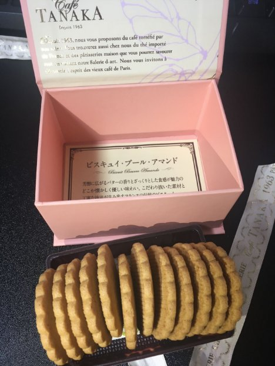

クッキー
2022年2月23日
2:59
CAFE TANAKA - ビスキュイ・ブール・アマンド
手作り感ありつつ整った味でこれぞ求めていたクッキー！という感じ。
この程度の量なら秒で溶ける。
食感はザクザク寄り。
でも歯ごたえがある硬さではなくてパキっといく感じ。
味がしっかりしてて少し甘めの味付けだとは思うけど甘すぎない自然な味で紅茶によく合いそう。
他のクッキーも食べてみたいんだけど入手できるんやろか

OneNote で作成されました。